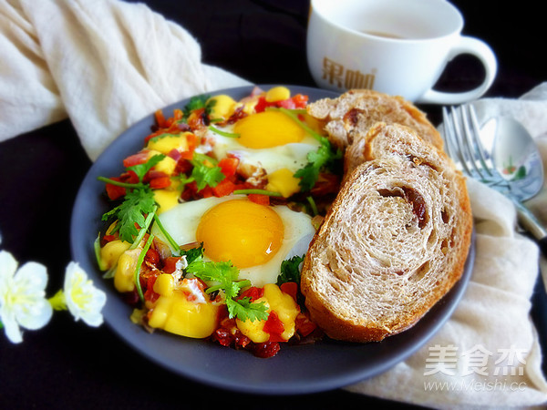
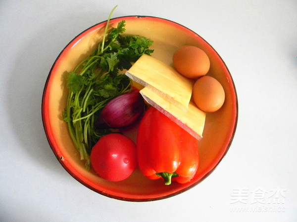
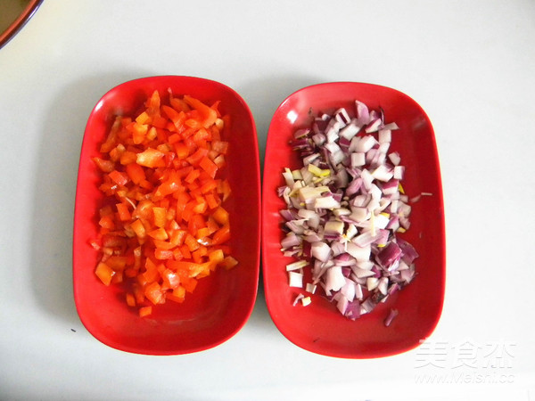
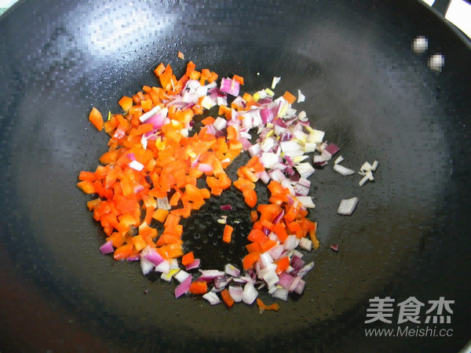
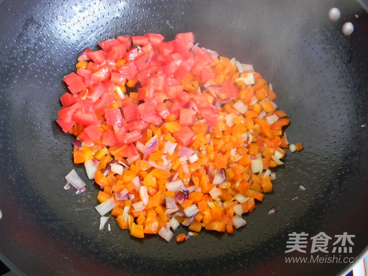
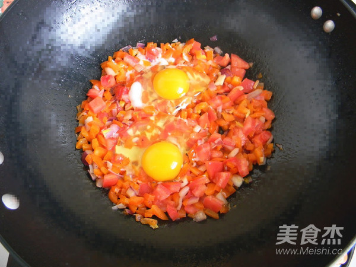
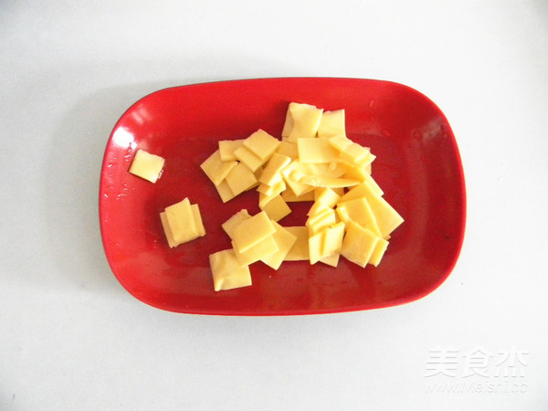
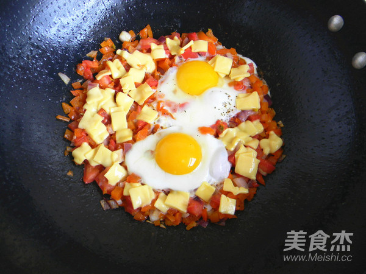
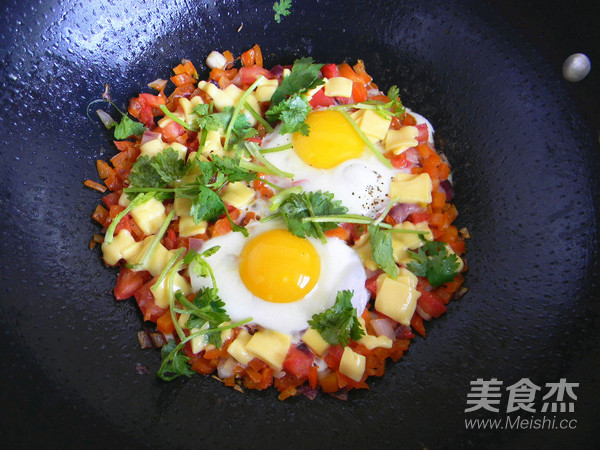

北非蛋
| 黄油 | 200g |
| 奶酪 | 200g |
| 糖 | 200g |
| 盐 | 200g |
| 味精 | 200g |
北非蛋的做法
1/9
材料备好，喜欢吃微酸的口味就备一个西红柿，不喜欢可以不放
2/9
把洋葱和彩椒切成碎丁，放西红柿的话也把西红柿一起切丁
3/9
两片芝士片切成小方块
4/9
在放西红柿丁，加盐和胡椒粉炒出香味。
5/9
打入鸡蛋，转小火，不要翻动
6/9
打入鸡蛋，转小火，不要翻动
7/9
看鸡蛋清凝固成白色，放入芝士片
8/9
看芝士片变软微化，在把香菜直接手撕撒上，也可以在撒点黑胡椒粉就ok了。
9/9
开始享用美食吧！